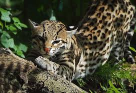

Manigordo, ocelote.

Preocupación Menor
Poblaciones en peligro de extincion
Alimentación
Son carnívoros y se alimentan de mamíferos pequeños, aves y culebras. Entre ellos las ratas de monte (Proechimys semispinosus), el zorro pelón (Didelphis marsupialis), el zorricí (Marmosa sp.), el murciélago (Lonchophylla sp.), el ratón de monte (Heteromys desmarestianus), la guatuza (Dasyprocta punctata), el ratón de monte (Tylomys watsoni), el ratón de monte (Zygodontomys brevicauda), la martilla (Potos flavus, la iguana (Iguana iguana), la pava granadera (Penelope purpurecens), insectos.
Comportamiento
Son principalmente nocturnos y crepusculares.
Son solitarios y terrrestres, sin embargo, presentan gran facilidad para subir a los árboles.
Habitat
Viven en bosques húmedos, bosques secos, bosques de galería, bosques secundarios viejos y en ocasiones se presentan en áreas agrícolas.
Distribución
Hábitats disponibles en todo el país, desde el nivel del mar hasta los 3.800m.
Distribución fuera de Costa Rica
Desde el sur de E.E.U.U. hasta el norte de Argentina. Se localiza desde las tierras bajas hasta los 3.800 m.s.n.m..
Distribución de Area de conservación
Amistad CaribeAmistad PacificoHuetar NorteArenalCordillera Volcanica CentralGuanacasteOsaPacifico CentralTempisqueTortuguero
Tipo de Localidad
Limitado a México por Thomas (1911), luego limitado por Allen (1919) a Veracruz.
Estado de amenaza
ESTADO:
Esta especie está considerada como en peligro de extinción, debido principalmente a la cacería indiscriminada y a la pérdida de su habitat por la deforestación. Está protegida y regulada por la Ley de Conservación de la Vida Silvestre No. 7317, la Ley Orgánica del Ambiente No. 7554 y el decreto No. 26435-MINAE. Asimismo está incluída en el Apéndice l del Convenio sobre el Comercio Internacional de Especies Amenazadas de Fauna y Flora Silvestre (CITES).
Biología de poblaciones
Su densidad de población es de 0.14-0.25/km2 de bosque primario.
Descripción científica
Longitud de la cabeza y cuerpo 640-838mm, longitud de la cola 260-419mm, peso 7-14.5kg. Es el más grande de los pequeños felinos manchados. La cola es angosta y sin pelaje espeso; es más corta que las patas traseras. La parte dorsal es café arenoso hasta amarillo pálido, con un patrón de rosetas negras o grandes óvalos con la parte central de color café leonado. La parte ventral tiene manchas negras y blancas. El pelaje es además corto y liso, está invertido sobre la nuca, inclinado hacia la cabeza. Los ojos son medianos, amarillentos. Ante el reflejo de la luz, los ojos son de color amarillo brillante. Las patas son largas y las delanteras son más anchas que las traseras.
Chinchilla, F. 1994. La dieta del jaguar (Panthera onca), el puma (Felis concolor), el manigordo (Felis pardalis) (Carnivora, Felidae) y dos métodos de evaluación de su abundancia relativa en el Parque Nacional Corcovado, Costa Rica. Tesis de Maestría en Manejo de Vida Silvestre. Sistema de Estudios de Postgrado, Programa Regional en Manejo de Vida Silvestre para Mesoamérica y el Caribe. Heredia, Costa Rica. 49 p.
Goodwin, G.C.. 1946. Mammals of Costa Rica. Bulletin of The American Museum of Natural History 87(5): 271-473
Hall, E.R..1981. Mammals of North America. Vols. 1 and 2. John Wiley, New York. 1175 p.
Koford, C.B. 1983. Felis onca (tigre, jaguar). Pp. 470-471, In: D.H. Janzen (ed.). Costa Rican Natural History. University of Chicago Press. Chicago.
Koford, C.B. 1983. Felis wiedii (tigrillo, caucel, margay). Pp. 471-472, In: D.H. Janzen (ed.). Costa Rican Natural History. University of Chicago Press. Chicago.
Nowak, R.M. 1991. Walker´s Mammals of the World. Fifth Edition. The John Hopkins University. Baltimore. 1362 p.
Reid, F.. 1997. A FIELD GUIDE TO THE MAMMALS OF CENTRAL AMERICA & SOUTHEAST MEXICO. Oxford University Press, New York. 334 p.
Rodríguez, J. & F. Chinchilla. 1996. Lista de Mamíferos de Costa Rica. Rev. Biol. Trop. 44(2): 877-890.
Timm, R., D. E. Wilson, B.Clauson, R. LaVal & C. Vaughan. 1989. Mammals of the La Selva-Braulio Carrillo complex, Costa Rica. Fish and Wildlife Service, U.S.A.. North American Fauna 75. 162 p.
Universidad de Costa Rica. s.f.. Catálogo de Mamíferos. Museo de Zoología, Escuela de Biología, Universidad de Costa Rica. s.d.
Vaughan, C. 1983. A report on dense forest habitat for endangered wildlife species in Costa Rica. Escuela de Ciencias Ambientales. Universidad Nacional. Heredia, Costa Rica. 99 p.
Wilson, D.E. 1983. Checklist of Mammals. Pp. 443-448, In: D.H. Janzen (ed.). Costa Rican Natural History. University of Chicago Press. Chicago.
Wilson, D.E. & D.M. Reeder (eds.). 1993. Mammals Species of the World: a taxonomic and geographic reference. Second Edition. Smithsonian Institution Press, Washington. 1.206 p.